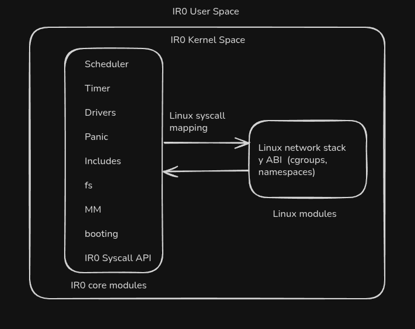

IR0 Kernel - Overview
El propósito de esta "wiki", documentación web, guía, como le digas, es usarla como ayuda-memoria
personal
para el desarrollo del kernel.
No tiene que ser una página ultra estética, pero me estoy esforzando para que no se note que la hice
con html, css y js vanilla como la de algún proyecto aficionado
que anda por ahí.
Un kernel de sistema operativo mínimamente funcional (todo el Kernel Space más un user space mínimo)
puede andar fácilmente en las 15.000 líneas de código por lo que, como verás;
es humanamente imposible memorizar y comprender todo el flujo del kernel por mí mismo. Además son
muchos subsistemas complejos trabajando a bajo nivel juntos para intermediar entre hardware y
software.
¿Qué es IR0?
IR0 es un kernel de sistema operativo multipropósito desarrollado
desde cero para arquitectura
x86-64 escrito principalmente en C y ASM (Aunque
no tengo ningún problema en incluir código de otros lenguajes especializados en performance como
Cpp o Rust).
Lo estoy creando para aprender más sobre sistemas operativos y poder usarlo como materia
prima para otro proyecto que replica a WSL2 pero con mi propio kernel.
No descarto escalarlo lo suficiente como para hacerlo usable en servidores mínimos o incluso IoT,
pero entiendo que eso es al largo (larguísimo) plazo.
Este
es su Repositorio de GitHub.
Características Principales y las futuras
- Kernel monolítico para arquitectura x86-64
- Gestión de memoria con paging en esas dos arquitecturas
- Manejo de interrupciones y excepciones
- Bootloader personalizado (Sólo en x86 y segúramente migre todas las arquitecturas a GRUB)
- El código ensamblador que uso es en sintaxis de Intel Netwide Assembler (nasm).
- Filesystem propio basado en EXT con optimización con bbdd vectorial en espacio de usuario
- Pila de red y ABI prestados de Linux (Son millones de líneas de código que no pienso escribir solo)
- Syscalls propias y algunas mapeadas de Linux
- Algunos drivers para manejo de hardware mínimo.
Estado del Proyecto
Versión: no versionado aún (pero vamos a decir pre-release por ahora.)
Arquitectura: x86-64 (i386)
Bootloader: GRUB
Sintaxis ASM: Intel
Arquitectura del Sistema

Arquitectura y "Filosofía" del proyecto
A diferencia de kernels como kernel NT (Híbrido) de Microsoft, Redox-OS
(Microkernel),
o el mismo MINIX kernel (microkernel), IR0 se basa en una arquitectura más
similar a la que tiene Linux, que es monolítico.
Sin embargo, mi argumento principal es el del rendimiento. Entiendo que alguien podría venir y
señalar que, como todo monolito, si un subcomponente se rompe, se cae todo el sistema (y
tendría razón)
pero lo que respondo a eso es que "¿De qué me sirve a mí que el kernel soporte seguir sin
filesystem si no puedo hacer nada práctico sin él?", es decir, no tiene sentido que el
kernel
continúe funcionando sin uno de sus componentes clave corriendo.
Por eso no veo mejor alternativa (por ahora) que el patrón monolítico. Y además me ahorra el tener que interconectar
subsistemas clave entre sí con IPC, lo que impacta de una en el rendimiento del Sistema Operativo.
No es
perfecto, pero es estable. No es del todo trazable y requiere escalar de a poco, pero si escala bien
rinde mucho.
Sin embargo yo también tengo desacuerdos con la filosofía UNIX. Ellos (entre otras cosas y de forma resumidísima)
consideran
que si algo falla, que falle bien. Lo que en términos kernelísticos sería: Si se rompe el
scheduler, Panic() directo. Si tenés corrupción en memoria (en espacio de kernel),
Panic.
Y no es que lo cuestiono por que sí, simplemente pregunto (aunque sin soluciones todavía) "¿Por
qué no rescatar el sistema en tiempo de Panic()?, o por lo menos hacer el intento".
Mas allá del punto filosófico y para resumir, el kernel es monolítico porque es más performante y
siento que las piezas clave del núcleo deben trabajar sin overhead.
Sin embargo, si en el futuro necesitara integrar algún subsistema específico de forma híbrida,
seguramente sería pragmático.
El Kernel Space es sagrado
Yo sé que hablo como si IR0 fuera usado por miles de personas y toda la historia, pero me voy a dar
el lujo de opinar al respecto.
Entonces, el punto es que el kernel space tiene que ser sólo habitable por subsistemas
que trabajen en ese Entorno,
nada mas.
Entiendo que hayan ciertos fabricantes preocupados por la seguridad de sus
clientes que,
casualmente, tienen acceso a toda interrupción que el usuario haga (saben qué teclas presionás,
el tiempo de tu sesión cada vez que prendés la compu, etc.) Y todo eso porque tienen
software funcionando en el kernel space con todos los privilegios que eso
implica.
RING 0 es únicamente para el kernel. Todo lo que venga del RING 3
se comunica con syscalls(), fin del comunicado.
Qué le pido prestado a Linux?
Si pretendo hacer que IR0 funcione como soporte para servidores (backends, juegos, etc), que pueda
correr docker y kubernetes (al menos) y que, en algún momento,
pueda funcionar como base para IoT, necesito tener en primer lugar soporte de red, con sus
drivers, soporte de protocolos de red modernos mas todos los algoritmos que
implementan internamente.
En el Kernel Linux son mas o menos 1.500.000 de líneas de código SÓLO LA PILA DE RED
COMPLETA.
Literal, si quisiera levantarla de cero, a lo mejor pasaría una década y no estaría lista. No me
siento tan zarpado la verdad.
Te muestro como sería lo que necesito de la pila de red:

Entiédase hardware como los componentes de tu MOBO que hablan con el kernel.
Aparte, acá se ve clarito como el kernel intermedia entre el hard y el soft.
El mismo asunto tenemos con el soporte para contenedores. Acá el tema es un toque
más tranqui porque son un par menos de líneas de código en total: unas 300.000 líneas
pero igual, como pasa con la pila de red, son dos proyectos totalmente aparte.
Mas o menos esto es lo que requiere docker para andar, desde la app con su runtime, hasta sus
accesos en el kernel.

Fijate que docker necesita levantar literalmente un file system virtual, además de limitar la
cpu, acceder a RAM, tener una interfaz de red privada, usa los namespaces para aislar del
entorno su contenido, etc.
Cómo lo voy a resolver?
Bueno, si escribir la pila red y el soporte de contenedores no es trivial, integrarlos fuera de su entorno tampoco lo es, pero es mas humano que diagramar, implementar y testear.Muy seguramente me toque mapear las syscalls que espera esa parte de Linux al estilo Wine/Proton, o copiarles algunas de las que usan nativamente si me sirven después.
Estructura de Directorios
Cómo la estructura de archivos puede cambiar constantemente, prefiero que la consultes en el Repositorio de GitHub.
Gestión de Ramas
Flujo de Trabajo con Git
Para eso uso 3 ramas de git principales en el proceso: mainline, dev y feature (que aunque feature no está en el repositorio, es la que se usa como convención para integrar código nuevo). Donde sólo mainline y dev son las únicas 2 ramas upstream.
experimental es una rama divergente a dev, y feature es la rama que se crea para enviar contribuciones.
mainline
STABLE
- Rama principal con código estable y testeado.
Características
- Solo código probado y funcional
- Documentación completa
- Mi base para rc's.
- mainline es sagrada, ya que este rama tiene que compilar y bootear siempre. Es la mas estable de las dos ramas upstream.
dev
STAGING
- Rama de desarrollo activo donde se implementan y testean nuevas features.
Características:
- Es el espejo de mainline.
- Lo que se mergee acá no tiene por qué pasar a mainline.
- Nuevas features en desarrollo que me convencieron de feature
- Parches de código, refactors y optimizaciones
- Puede contener bugs temporales que se resuelven sí o sí en esta rama.
feature
DEVELOPMENT
- La agrego porque es la rama donde se crean feats que despues pasan al upstream mergeando a dev . Es la más inestable de todas porque es donde se integra código nuevo que también debe ser testeado y revisado antes de llegar a merge.
Características:
- Acá es donde yo empiezo a implementar nuevas funcionalidades o parches
- Es la primera que se debuggea.
- Es la que crearías cuando forkeás el repo.
- Se espera que compile antes de pasar a dev.
experimental
MISC
- En esta rama, se integran features lo suficientemente inestables como para terminar en mainline pero que pueden tener potencial a futuro.
Características:
- Es una rama de pruebas puras, no tiene nada que ver con las ramas upstream estables
- Acá caen las features y experimentos que no llegan al mainline
- Cosas que no se prueban en sistemas operativos o ideas nuevas
- No es tan importante la estabilidad en esta rama
- Si se testean lo suficiente sin romper nada, pueden o no mergear a mainline primero pasando por dev de nuevo.
Cómo es el merging desde feature hasta mainline?
Después, hacés PR a la rama dev del upstream (no al mainline) y se hace la revisión y el merge en dado caso.
El merge a mainline depende de cuán alineado con el proyecto considere que es la feature.
Ni siquiera algunas de mis propias implementaciones las mergearía directo al mainline por esta misma razón.
Guía de Desarrollo
- Esta sección es por si alguien se interesa en contribuir al proyecto. No
son
reglas estrictas, son simplemente recomendaciones
para que sea mas llevadero.
¿Qué hay que saber para contribuir?
Más que nada lo siguiente:De igual forma, no hay que ser un experto para contribuir al kernel. Simplemente con tener ganas de aprender/estudiar sobre lo que vayas a contribuir es más que suficiente.
Configuración del Entorno
Dependencias Requeridas:
NOTA: Como este proyecto es un kernel, es Freestanding. Eso quiere decir que
vos
no podés incluir librerías como
stdio.h para hacer un
print(), write(), etc. por que no hay sistema operativo que
responda a esas funciones . Vos sos el
sistema operativo. por eso, en el repo tengo la carpeta de dependencias "includes".
Cómo escribo código?
Convenciones de Nombres:
- Funciones:
snake_case() - Macros:
UPPER_CASE - Structs:
struct_name_t - Variables globales:
g_variable_name - Constantes:
CONSTANT_NAME - includes:
#INCLUDE -ir0/Lib.h -(se estan migrando a ese formato)
Comentarios:
- archivos de encabezado .h de funciones documentadas
- Archivos de código fuente con comentarios en algunas funciones, pero mas acotados
- Explicación de algoritmos complejos
- TO DO's claramente marcados
- Referencias a documentación técnica

Fijate en cómo uso las llaves por debajo del nombre de la funcion y los mismo en condicionales, bucles, etc. También como directamente no las uso cuando el condicional tiene una sola línea o hay cierto nesting.

Los comentarios grandes van por lo general en éstos .h y en los fuente hacemos acotaciones.
Cómo compilar (por ahora)
Subsistemas del kernel
- No hay mucha ciencia acá. Simplemente doy una revisión de los subsistemas y
algunas
features a desarrollar
a futuro.
Igual, la mejor forma de interiorizarse sobre el funcionamiento del kernel, es viendo el código del
Repositorio de GitHub.
Scheduler
Por ahora es un Round-Robin simple. La idea es usarlo como fallback ya que el
sched
principal debería ser preemptivo
y usa un esquema de prioridad simple (CFS o algo así).
Archivos: scheduler/scheduler.c, scheduler/task.h, scheduler/switch/switch.asm.
Filesystem
Basado en EXT2 y hecho desde cero. La única innovación
sería incluir optimizacion en funciones de búsqueda con una lib de
bbdd vectorial
en la que contribuí.
Archivos: A implementar.
Sistema de Interrupciones
IDT de 256 entradas, manejo de page faults, handlers y wrapper en ensamblador.
Archivos: interrupt/idt.c, interrupt/interrupt.asm, interrupt/isr_handlers.c con
sus
encabezados.
Subsistema de arranque
Arranque dependiendo de la arquitectura (X86_64) con punto de entrada en ASM.
 Archivos: boot.asm, kmain.c arch.c, kernel_start.c.
Archivos: boot.asm, kmain.c arch.c, kernel_start.c.
Descargas